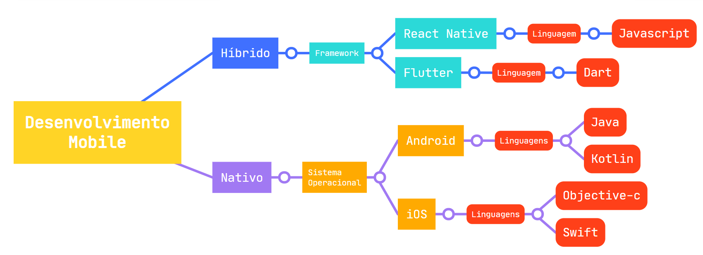

Independente da fase de maturidade de um Dev (júnor, pleno ou sênior), podemos desencadear um estado de espírito maior chamado Dev Cansado. Esse podcast é seu!
Os smartphones começaram a ficar mais conhecidos depois do surgimento do primeiro Iphone em 2007. Logo no ano seguinte, veio o Android, lançando versões mais competitivas e popularizando a utilização dos aparelhos.
Atualmente, o Brasil está entre os cinco países com maior número de pessoas usuárias de smartphone (pesquisa anual da Newzoo de 2020) e, com tantas opções de aplicativos para facilitar nosso dia a dia, não é nada surpreendente que o mercado mobile esteja em constante avanço.
Diante disso, você pode ter muitas perguntas. O que é nativo? O que é híbrido? Onde posso começar a escrever meu código e transformar uma ideia em aplicativo? Primeiramente, quem quer desenvolver aplicativos para iOS e Android vai encontrar várias possibilidades, seja com desenvolvimento híbrido ou nativo. Existem várias tecnologias que vão ajudar nesse processo de criação de apps e vamos conhecer um pouquinho mais sobre algumas delas.
Que no universo mobile existem várias possibilidades a gente já falou, mas a pergunta que geralmente vem antes de chegar nas tecnologias em si é: desenvolvimento nativo ou híbrido, qual é melhor?
Primeiramente, dizer qual o melhor sem ter um contexto é uma tarefa bem difícil, pois ambos têm suas vantagens e desvantagens que devem ser analisadas de acordo com as necessidades de desenvolvimento. Beleza, mas o que é esse tal de híbrido e de nativo?
O desenvolvimento nativo é aquele em que desenvolvemos para um sistema operacional específico, seja Android ou iOS. Uma das vantagens de optar pelo desenvolvimento nativo é que, por ter um desenvolvimento específico, ele se torna mais rápido e pode oferecer uma melhor experiência para o usuário.
Porém, essa característica de desenvolvimento exclusivo acaba se tornando uma desvantagem quando precisamos desenvolver um mesmo aplicativo para os dois sistemas operacionais.
Já no desenvolvimento híbrido, conseguimos criar um mesmo aplicativo que poderá ser executado tanto no sistema operacional Android quanto no iOS, trazendo assim uma otimização maior durante o desenvolvimento. Porém, podem existir algumas desvantagens em utilizar o desenvolvimento híbrido, por exemplo, ter mais dificuldades em aplicar alguma interação mais complexa e específica de uma plataforma
Os aplicativos nativos são desenvolvidos com as linguagens próprias para Android e iOS. Já nos aplicativos híbridos, as principais tecnologias são o React Native e o Flutter, e vamos ver sobre elas um pouco melhor mais a frente.
Agora que vimos um pouco sobre as diferenças entre desenvolvimento nativo e híbrido, e também sobre as tecnologias usadas em desenvolvimento mobile, é importante conhecer os dois principais sistemas operacionais utilizados nos celulares: Android e iOS.

Android é o sistema operacional do Google e no desenvolvimento de aplicativos nativos, utilizamos as linguagens Java e Kotlin com a IDE Android Studio, que traz funcionalidades e recursos para facilitar o desenvolvimento de aplicativos. Para aprender a desenvolver aplicativos nativos para Android, temos na Alura a Formação Android utilizando o Java e os cursos de Android com Kotlin.

Já o iOS é o sistema operacional da Apple e as principais linguagens utilizadas para desenvolvimento nativo são Objective-C e Swift, sendo esta última uma linguagem mais limpa e mais moderna, por isso, tem sido bastante utilizada. Para desenvolver em Swift, é preciso ter um Mac com Xcode, que é a IDE da Apple, instalado.
Resumindo, para desenvolvimento nativo Android usamos Java e Kotlin, e para iOS, podemos usar Objective-C e Swift. Mas e para desenvolvimento híbrido? É o que veremos a seguir com React Native e Flutter.
React Native é um framework para desenvolvimento de aplicativos mobile multiplataforma criado pelo Facebook baseado no React, que é um framework JavaScript para desenvolvimento web. Com ele, é possível desenvolver aplicativos tanto para Android quanto para iOS com um mesmo código JavaScript.
Flutter é um framework criado pela Google para desenvolver aplicativos mobile multiplataforma e que utiliza a linguagem Dart. Assim como o React Native, com o Flutter é possível desenvolver para Android e iOS com um único código base.
No mapa mental abaixo estão resumidas todas as informações sobre desenvolvimento mobile que vimos nesse artigo, e você pode utilizar quando precisar fazer uma consulta mais rápida:

Independente da fase de maturidade de um Dev (júnor, pleno ou sênior), podemos desencadear um estado de espírito maior chamado Dev Cansado. Esse podcast é seu!

Podcast sobre desenvolvimento web, um episódio novo toda sexta-feira!

É o podcast onde o pessoal da Caelum e da Alura entram em discussões acaloradas sobre programação, design, ux, gadgets, startups e as últimas modinhas em tecnologia.
Sed varius enim lorem ullamcorper dolore aliquam aenean ornare velit lacus, ac varius enim lorem ullamcorper dolore.